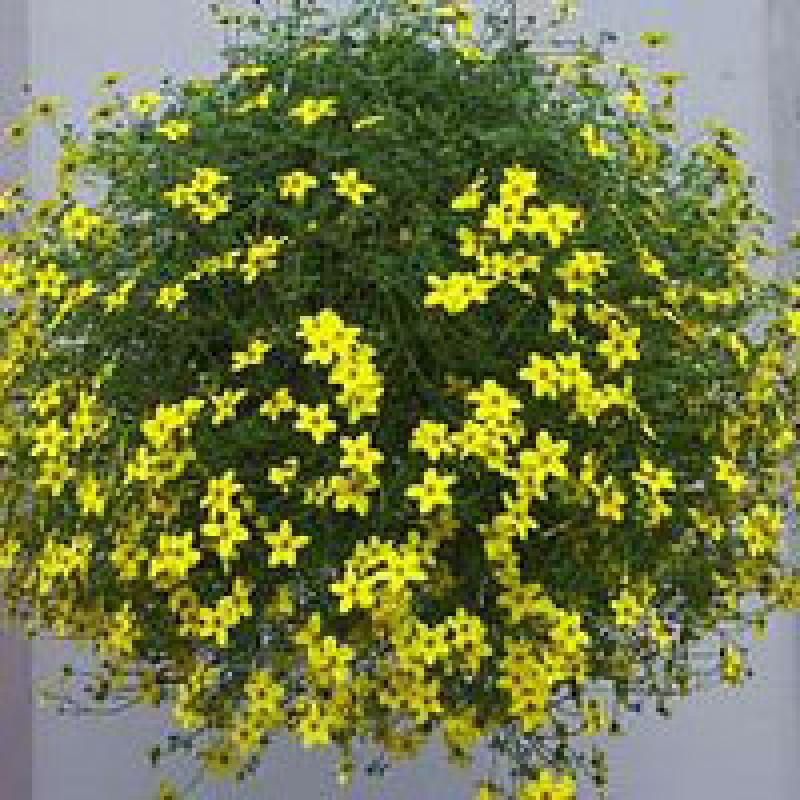
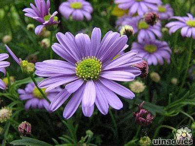
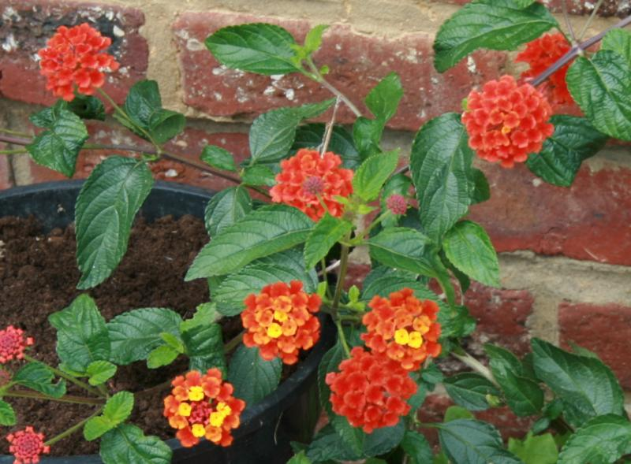

-

Tandzaad komt oorspronkelijk uit Mexico waar het een doorlevende plant is. In ons klimaat zal de plant niet overleven en wordt de Bidens als eenjarige in bloembakken aangeplant. Een zeer dankbare kuipplant met gele bloemen. Deze plant wordt niet alleen in bloembakken gebruikt, maar is ook dank zij de lange slanke stengels vol bloemen razend populair in hanging baskets. In Oostenrijk is het zelfs een van de meest populaire planten voor in de balkonbakken. De bloemen geuren lichtjes en trekken vele vlinders en zweefvliegen aan.
Bidens doet het prima op elke goed waterdoorlaatbare bodem. De planten staan graag in de volle zon en herstellen vrij snel als ze eens te droog hebben gestaan.
Variëteiten van deze soort bloeien vanaf eind april tot aan de eerste nachtvorst. De bladeren van de Bidens ferulifolia zijn varenachtig.
De Bidens is vrij gemakkelijk te stekken in de zomer door kruidachtige kopstekjes.
De plant kreeg de Nederlandse benaming 'tandzaad' omdat er aan de zaadjes weerhaakjes of tandjes zitten. Deze haken zich vast aan de pels van passerende dieren waardoor de zaden verspreid raken.
Mooi te combineren met Surfina, Scaevola of de waaierbloem, Verbena, Brachycome, Bacopa,...
-
Brachycome
Extra Info

Ideale rijkbloeiende eenjarige kuipplant voor het beplanten van potten, bakken of hangmanden.
Diep ingesneden bladeren aan de smalle stengels van de Brachyscome
Het is een sterk vertakkende maar toch compacte plant met zeer fijne varenachtige bladeren.
Net als alle andere eenjarige en vorstgevoelige planten kunnen deze planten naar buiten vanaf half mei.
De bloemen lijken zeer sterk op blauwe madeliefjes en daar de plant zijn herkomst vindt in Australië is het niet verwonderlijk dat de Nederlandse benaming voor de Brachycome luistert naar Australisch madeliefje.
Van origine verdragen de planten goed de droogte en houden ze van een zonnige standplaats. Ze houden helemaal niet van natte voeten. Zorg ervoor dat het giet- en regenwater goed kan weglopen uit de bloembakken. Geef de planten regelmatig kleine gietbeurten met extra plantenvoedsel. Een rijke bloei vraagt aan de planten veel energie en een wekelijkse portie opgeloste meststoffen zal de planten nog rijker en langer laten doorbloeien.
Mooi te combineren met Surfina, Scaevola of de waaierbloem, Verbena, Bidens of tandzaad, Sutera cordata of de Bacopa, Helichrysum petiolare,...
-
-

Lantana behoort tot de familie van ijzerhardachtigen (Verbenaceae), waartoe ook ijzerhard behoort.
Het is typisch een struik voor in een kuip.
De struik wordt bij ons tot maximaal twee meter hoog. De struik heeft wat ruwe bladen met dicht opeen staande nerven.
Bloemen staan in schermen en verbloeien van binnen naar buiten. Na de bloei kunnen zich braamachtige vruchten vormen.
Lantana wordt bij ons wisselbloem of bourbontje genoemd. Plant de struik in een voedzame, goed doorlatende potgrond.
In de zomer de struik buiten in de tuin of op het balkon een plaats in de volle zon geven.
Wanneer de struik in het voorjaar wordt verpot, is toevoeging van verteerde stalmest aan de (nieuwe) potgrond nodig voor een goede groei.
Top de jonge scheuten die in het voorjaar groeien geregeld. Zo ontstaat een compacte en goed bloeiende struik.
Met de afgeknipte scheuten kan worden gestekt. Zet ze in potjes met zanderige grond, waarin ze snel wortels zullen vormen.
Als de stekken flink beworteld zijn, kunnen ze opnieuw worden opgepot. De jonge planten kunnen begin juni buiten worden uitplant.
Lantana zaaien kan in januari - februari in een kamerkasje bij een temperatuur van 20 °C. Een nadeel van zaaien is, dat het kiempercentage nogal laag is.
Zaai je in een koude kas vanaf april dan ligt het kiempercentage veel hoger.
Zorg tijdens het groeiseizoen voor een permanent vochtige grond. Controleer de struik regelmatig op de aanwezigheid van witte vlieg en spintmijt. Bij te veel water vouwen de bladeren zich naar binnen dicht.